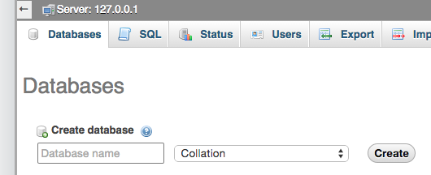
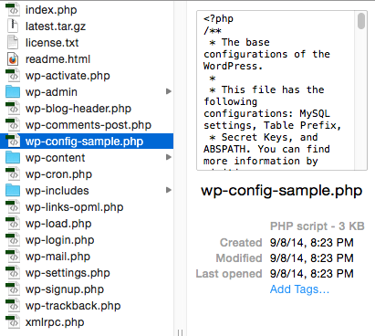

<?php the_title(); ?>
<?php the_content(); ?>
Created by Travis Hoglund / @thoglund
Before diving right into WordPress, we need to ensure that we have a local environment that can run PHP & MySQL.
MAMP is free and available for both OS X & Windows. Download MAMP, and install it with all of the default options.
Once installed, MAMP project folders should be accessible at http://localhost:8888.
Depending how your local environment is setup, you should be able to access phpMyAdmin at http://localhost:8888/phpmyadmin
Click on Databases in the top left, then create one.

For reference, the default user/pass for MAMP is root/root.

To download a copy of WordPress, we head over to WordPress.org and grab the latest version.
Once downloaded, we unzip our file into our local htdocs directory
(C:/MAMP/htdocs),
(Applications/MAMP/htdocs), etc.
Rename the wordpress folder to whatever your project should be named.

Copy the wp-config-sample.php file and name
it wp-config.php
Replace the fields in the file with the below with your local information:
/** The name of the database for WordPress */
define('DB_NAME', '');
/** MySQL database username */
define('DB_USER', '');
/** MySQL database password */
define('DB_PASSWORD', '');
/** MySQL hostname */
define('DB_HOST', '');
Navigate to http://localhost:8888/projectfolder.
WordPress will ask for a site title, admin username, admin password, & admin email.
The WordPress front-end should be available at http://localhost:8888/projectfolder
The WordPress back-end should be available at http://localhost:8888/projectfolder/wp-admin

GIT is a version control system that allows you to track changes in your code in case you ever need to rollback something that you may have incorrectly changed.
Download GIT, install it, and open your terminal/command prompt. Navigate to your project folder and run:
git init
git add .
git commit -m "Our First Git Commit"
For more info on GIT and it's capabilities, please see Josh Crawmer's GIT presentation from our first meetup.
WordPress themes are templates that allow us to create awesome designs without modifying any core WP code.
By default, WP has 3 themes installed - twentyfifteen, twentyfourteen, and twentythirteen.
WordPress has a lot of free themes available in the admin interface. In your WP dashboard, select
Appearance->Themes.
Once the page loads, click Add New (near the top of the page). All of these themes are free.
Lets do it! WordPress needs two files:
/*
Theme Name: Meetup Custom Theme
*/
Other fields *should* be added to the comment as well like author info, licensing, etc.
Create a folder with your theme name inside wp-content/themes/.
Create a blank index.php file, and a style.css file with the comment from the previous slide.
In the WP dashboard, we can now activate our theme!
We have created the bare minimum for a theme to be activated, but WP wants more. Here is a list of what it wants and why.
Others include 404.php, archive.php, search.php, searchform.php, comments.php, sidebar.php, and custom templates.
I created a blank theme for this presentation that we will be using and referencing.
This file is referenced by using the WP function get_header(); in our template files.
<html>
<head>
<meta charset="utf-8">
<title><?php the_title(); ?></title>
<?php wp_head(); ?>
</head>
<body>
<?php wp_nav_menu(); ?>
This file is referenced by using the WP function get_sidebar(); in our template files.
This is our sidebar content
This file is referenced by using the WP function get_footer(); in our template files.
<?php wp_footer(); ?>
<body>
</html>
The page.php file is the template that WP loads when accessing a page. An example of our very basic template is:
<?php
get_header(); ?>
<?php the_title(); ?>
<?php the_content(); ?>
<?php
get_footer(); ?>
The single.php file is the template that WP loads when accessing a post. An example of our very basic template is:
<?php
get_header(); ?>
<?php the_title(); ?>
<?php the_content(); ?>
<?php
get_footer(); ?>
I like to name my templates [template-example.php], where example represents what the template should be called. In your theme folder, create template-home.php with the following content:
<?php
/*
Template Name: Home
*/
get_header(); ?>
Homepage Template Loaded<br />
<?php the_title(); ?>
<?php
get_footer(); ?>
From your WP dashboard, select the page you want to have the custom template. In the right sidebar, you will see "Home" as an option, it's that simple.
I want to open the floor to any questions that people might have about themes, then we will move onto plugins.
Plugins are a lot more simple than they sound. A plugin is just a collection of actions/hooks that can control WordPress and add functionality without modifying the WP core.
In the meetup theme I have created, you will notice a functions.php file that I skipped over earlier. This is where you can put simple custom hooks/actions.
If you are creating extensible code, you will want to transform this into a plugin that others can use.
To create our own plugin, we create a custom folder in the wp-content/plugins folder. We then need a single php file that contains a comment:
<?php
/*
Plugin Name: Meetup Title Override
Description: This plugin overrides the front page title
*/
function meetup_override_title( $title, $id = null ) {
if ( is_front_page() ) {
return '** Meetup Title Override Homepage Only **';
}
return $title;
}
add_filter( 'the_title', 'meetup_override_title', 10, 2 );
?>
Our plugin is created, now it will show up in the WP dashboard under Plugins. Let's activate it, and it should override the homepage title.
Plugins can be as simple as overriding a title, to building a custom E-Commerce cart system that links to Authorize.NET, Stripe, and Paypal for users.
I want to open the floor to any questions that people might have about plugins.
This presentation just scratched the surface of what WP can do. Things to cover in the future are custom taxonomies, custom post types, custom actions/hooks for plugin developers, etc.
If you have any questions or suggestions, you can reach out on Twitter @thoglund or message me on the Meetup website.
This presentation will be uploaded to our Meetup's Github account. I will have Josh send out a link through the Meetup site.